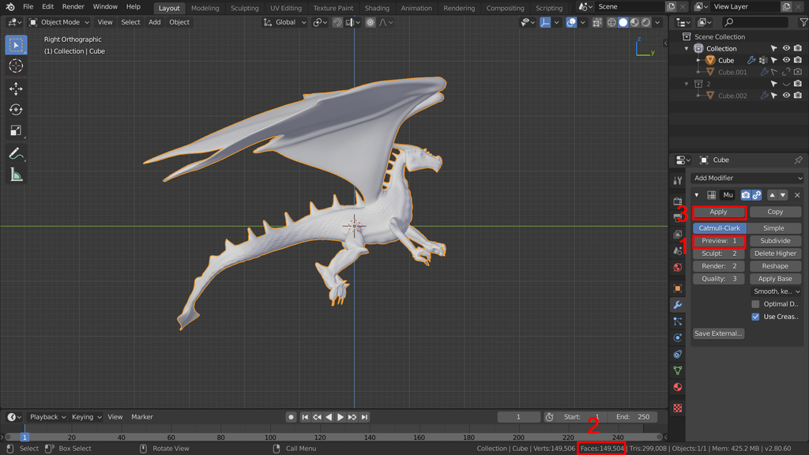
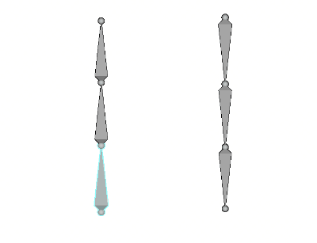
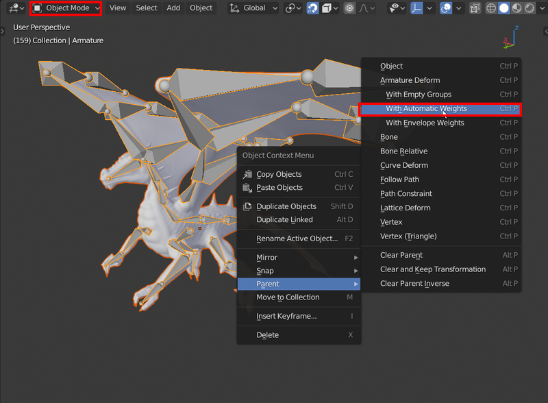

Übung 7.1 - Rigging
In dieser Übung werden wir den Drachen mithilfe eines Skeletts verformbar machen und animieren.

Vorbereitung

- Öffnet euren Drachen
- Wenn ihr im Laufe der Übung feststellt, dass sich euer Drache nicht eignet, kann auch dieses Beispielmodell verwendet werden.
- Stellt den Preview Wert des Multiresolution Modifiers so niedrig ein [1], dass die Anzahl der Polygone [2] je nach Rechnerkapazität 100.000 - 200.000 nicht überschreitet. Bei verwendung des Beispielmodells, entfällt dieser Schritt.
- Wendet den Modifier mit Apply [3] an.
Um feine Details vom Sculpting auch auf das Mesh mit weniger Polygonen anzuwenden, wird üblicherweise Normal Map Baking verwendet, das würde jedoch den Rahmen der Veranstaltung sprengen.
1. Drachen Riggen
1.1 Knochen
Um den Drachen zu animieren, müssen wir ihm zuerst ein “Skelett” geben, das bestimmt wie sich das Mesh verformen kann.
- Selektiert den Drachen und setzt den 3D-Cursor an dessen Position. (Shift + S → Cursor to Selected)
- Fügt mit
Shift + Aein Armature Objekt hinzu - Im Armature Tab des Properties Editors, stellt Viewport Display → In Front ein, damit das Skelett im Drachen angezeigt wird.

- Wechselt zum Editmode
- Nutzt das Extrude Tool (oder Shortcut
E), um ein Skelett in den Drachen zu ziehen - Mit
Shift + Dkönnen Knochen dupliziert werden - diese übernehmen dann den übergeordneten Knochen des kopierten Knochen.
Die Rotation der Knochen hat später ihren Mittelpunkt am dicken Ende, deswegen sollte ca. an der Hüfte des Drachen die Richtung der Knochen umgekehrt werden.

- Um Knochen präziser in der Mitte der Gliedmaßen zu platzieren kann im 3D Viewport oben Volume Snapping aktiviert werden (Magneten anklicken und daneben zu Volume wechseln)

Beim Verschieben, springen Knochen nun in die Mitte des Volumens (z.b. Arm) unter dem Mauszeiger.
1.2 Drache an Skelett anbinden
- Wechselt nun zum Objectmode
- Deselektiert alles, selektiert dann zuerst den Drachen und dann das Skelett (Skelett sollte als helleres Orange angezeigt werden)
- Wählt dann Rechtsklick → Parent → With Automatic Weights aus.

1.3 Inverse Kinematics
- Wechselt zum Pose Mode
- selektiert den letzten Knochen in einem der Gliedmaßen
- Fügt im Properties Editor im Tab Bone Constraints einen Inverse Kinematics Constraint hinzu
- Stellt Chain Length auf die Anzahl der Knochen im Arm

Nun kann folgt der gesamte Arm der Bewegung der Hand und das Rig wird somit einfacher zu kontrollieren.
- Fügt allen Gliedmaßen einen solchen Constraint hinzu
2. Animation
2.1 Zeitleistenanimation
- Aktiviert in der Zeitleiste Automatic Keyframes (Punkt links neben den Player Controlls)
- Automatic Keyframing bewirkt, dass jedesmal wenn etwas bewegt wird, automatisch ein Keyframe gesetzt wird. So lässt sich schnell eine Animation erstellen
- Animiert den Drachen beim Feuerspeien (Feuer kommt später)
- Er sollte in der Luft stehend mit den Flügeln schlagen, aushohlen und dann feuern
- Wenn euer Drache keine Flügel hat, denkt euch eine alternative Aktion aus die er stattdessen machen könnte.
- Vergesst nicht, für alle Knochen die ihr animieren wollt auch bei Frame 1 für die Ausgangsposition einen Keyframe hinzuzufügen.
- WICHTIG! Deaktiviert Automatic Keyframes wieder, sobald es nicht mehr benötigt wird. Ansonsten kann es passieren, dass versehentlich Keyframes gesetzt werden.
2.2 FREIWILLIG Mund mit Shapekeys animieren
Wenn euer Drache einen zu öffnenden Mund hat, könnt ihr freiwillig Shape Keys benutzen um ihn zu animieren (siehe Video unten).
Der Value Wert eines Shape Keys kann wie jeder andere Wert animiert werden (Rechtsklick - insert Keyframe)